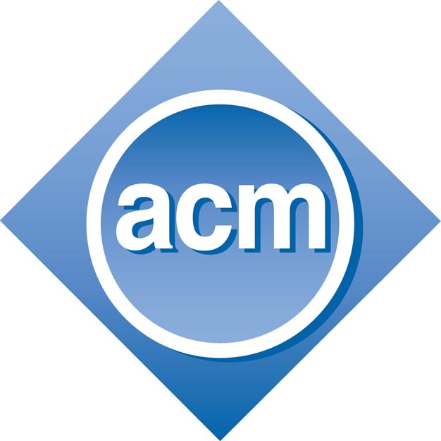

O "God View" era um painel interno da Uber que permitia que funcionários rastreassem, em tempo real, a localização de qualquer usuário.
A principal falha foi a falta de controle de acesso adequado, o que levou funcionários a usar a ferramenta para fins pessoais (como monitorar celebridades e jornalistas).
